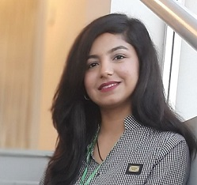

Bhagia Sheri Here...
About Me
Currently, I am enrolled in the final year of the Software Engineering Department, Mehran University of Engineering and Technology Jamshoro and working on enhancing the programming skills. I strongly believe in solving issues with better communication & objective reasoning that's why I have started working on projects since my first year. Till now I have worked so many projects and in the future, I am eager to work on projects with a huge impact. From my earlier internships' experience, I can say that Leadership, Project Management, Problem Solving, Time Management, Teamwork, and Effective Communications are my strengths in a professional environment.
What I do?

Coding is my passion